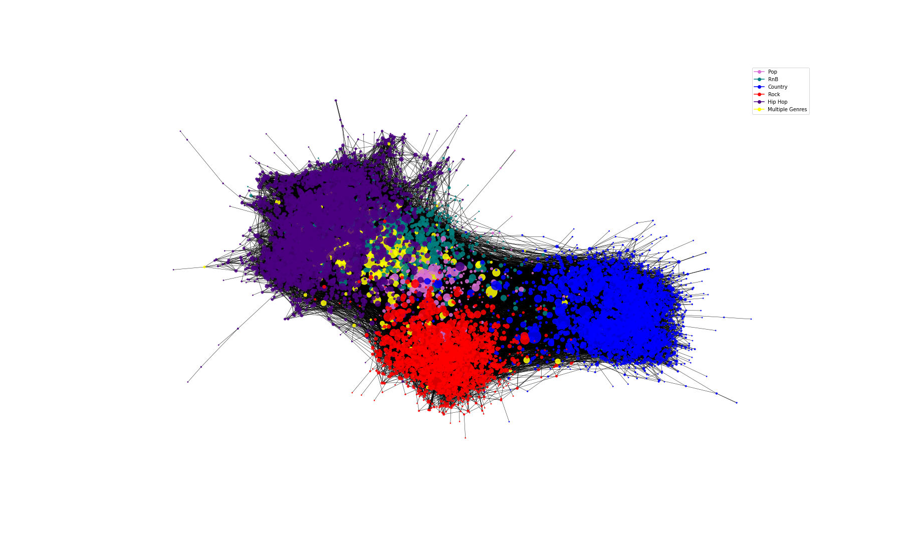

The network analysis provided on this page seeks to answer some questions about the linkage of music artists in and between different genres. Firstly, what main characteristics that exists for the network - including what attributes that can help to describe the artists. Then we explore what the so called "Backbone" of the network looks like is, and how a backbone-analysis will change the network. In the end communities are created in an attempt to figure out, how well the network actually represents common assumptions of linkages between music artists.
On the Data Desctiption page, it is explained in detail, how Wikipedia pages and Genius is used to collect information on each of the artists in the genres: Pop, Hip Hop, RnB, Rock & Country. how it is done, with nodes and edges and something somthing about high density of connections, which makes the analysis and visualisation difficult. therefore backbone.

how the edges are weighted, why we choose alpha = 0.1. Plot network, degree dist again. Artists per genre again.
Look at the largest, does it make sence?
{% include test_com.html %}